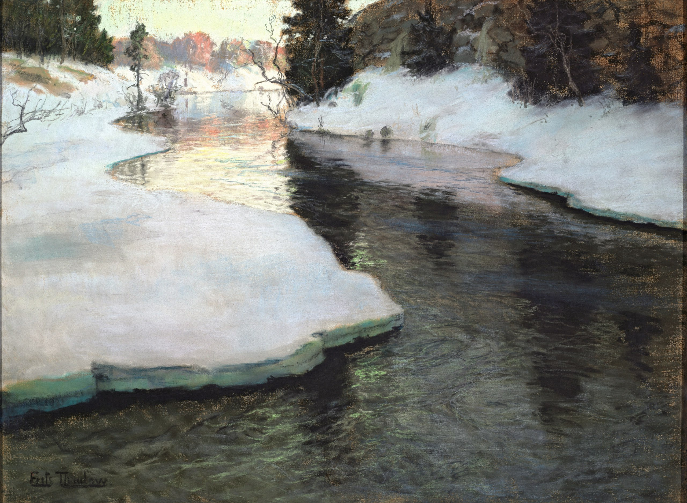

Йохан Фредерик Фриц Таулов
Горная речка, между 1887 и 1890 годами

Холст, пастель, 59,5 x 80 см
ГМИИ им. А.С. Пушкина, Москва.
История картины
- 1929, из Гос. музея иконописи и живописи им. И.С. Остроухова
- до 1918 в собрании И.С. Остроухова
- 12.03.1948, ГМИИ. Художник изобразил норвежскую реку Лисакер (норв. Lysaker elven) возле фермы Грини (Grini) в местечке Борум (Baerum) в пригороде Осло. Считается, что Таулов нарисовал 11 версий с однотипным сюжетом — «горная речка Лисакер извивается среди заснеженных берегов ранней весной». Одна из них висит в зале №13. Работая в технике пастели, Таулов точно передаёт эффект ясного зимнего неба с характерным для этого времени года освещением, сверкающего белизной снега, тёмной глади реки с отражающимися в ней деревьями. Несмотря на использование достижений французских художников, Таулов наделяет свой пейзаж ярко выраженным национальным колоритом, сплетая воедино реалистические, импрессионистические и символистские тенденции в искусстве. Художник неоднократно обращался к мотиву изображения тающего снега и создал несколько версий подобного пейзажа, которые пользовались у его современников несомненным успехом. https://collection.pushkinmuseum.art/entity/OBJECT/77340
Источник: http://www.newestmuseum.ru/data/authors/t/tauli_f/j_3473/index.php